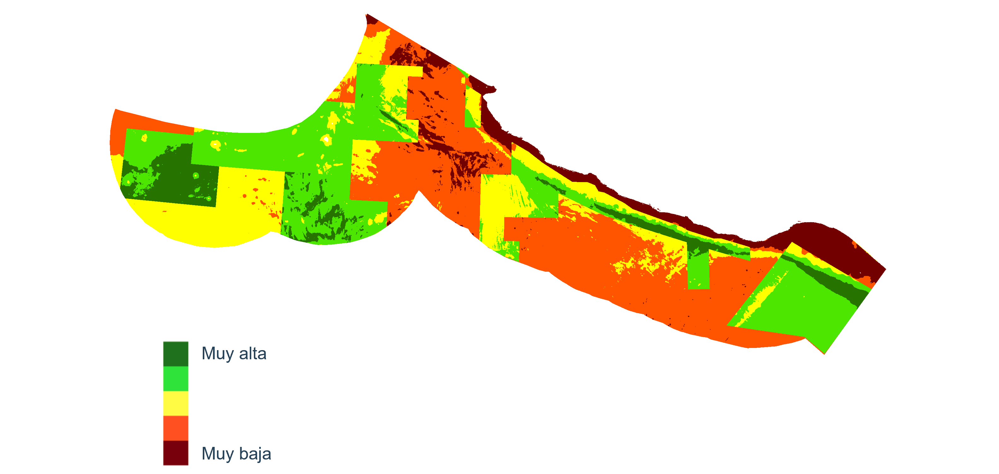

Ordenamiento Ecológico Marino del Pacífico Centro Sur
Análisis de aptitud sectorial
Objetivo
Identificar y priorizar las áreas mas factibles para la realización de actividades de cada sector en el Pacífico Centro Sur
El análisis de aptitud es un procedimiento que se dirige a delimitar la capacidad del territorio para el desarrollo de actividades sectoriales en el área a ordenar.
Desde el punto de vista técnico, el análisis de aptitud se desarrolla mediante la aplicación de herramientas de modelación multicriterio integradas a un sistema de información geográfica. En síntesis, el análisis de aptitud involucra las siguientes tareas:
Elaboración del modelo de aptitud. La finalidad de la modelación multicriterio en el análisis de aptitud es identificar y evaluar los atributos ambientales (componentes y condiciones del territorio) que requiere cada sector para desarrollar su actividad. El resultado de una modelación multicriterio es una estructura jerárquica con los atributos del territorio y sus pesos de importancia relativa para el cumplimiento de su meta en cuanto al uso del territorio. Estos pesos reflejan qué tan relevante es un atributo en términos de la capacidad del territorio para satisfacer necesidades sectoriales.
Definición de las funciones de valor. Una vez determinado el peso de importancia de los atributos del territorio, es necesario identificar la condición óptima del atributo que requiere el sector para desarrollar sus actividades. Esto se realiza utilizando un procedimiento denominado “funciones de valor”. Una función de valor es una transformación matemática, mediante la cual se evalúan las diferentes condiciones que tiene un atributo en el territorio. La condición ideal está siempre referida a un sector en particular, ya que una misma condición de un atributo puede resultar mala para un sector, pero muy buena para otro.
Generación en el sistema de información geográfica del mapa de aptitud. Esta tarea tiene como propósito transferir los resultados de la modelación multicriterio al sistema de información geográfica. El proceso involucra la síntesis de las capas digitales de los atributos definidos por los asistentes al taller sectorial, que ya incorporan los pesos y las funciones de valor respectivas.
Los mapas de aptitud que se obtienen como resultado distinguen las áreas donde se encuentran las mejores condiciones para el desarrollo de las actividades, de las zonas poco propicias. Así, presentan categorías que va de las áreas de mayor aptitud a las de menor aptitud.
La aptitud de un sector puede ser alta o baja, dependiendo de qué tantos atributos coinciden en un mismo sitio y de la condición en la que se encuentre el atributo en ese sitio. El valor de aptitud también está dado por el peso que cada sector le dio a cada uno de los atributos. Las áreas de mayor aptitud representan las de mayor interés para el sector, ya que tienen las mejores condiciones para el desarrollo de su actividad. Es importante considerar que la aptitud es un concepto relativo. Es decir, en los sitios de menor aptitud también se podría llevar a cabo una actividad en la medida en que se cuente con la capacidad de inversión en infraestructura o en tecnología para compensar las carencias de los atributos en cuestión.
Resultados
Los productos que se muestran son el resultado de un esfuerzo colaborativo de los participantes en los talleres colaborativos y muestran el conocimiento y experiencia de los participantes, así como la información disponible para representar en mapas los atributos ambientales identificados. Los productos de los talleres se actualizan conforme se obtienen resultados en las sesiones.